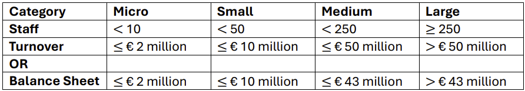

Fill in the following forms to find out what you need to do to take part in the DPP ecosystem.



The figure shows a digital maturity model that starts at incomplete, meaning there has been no digitalization in the company. Next, performed means that a planning has been made. Managed focuses on ensuring existing business processes are digitized through technology. Established means that digital transformation has been done based on existing standard. Predictable seizes those benefits by applying quantitative techniques on real-time data, with data analytics on business processes. Lastly, optimizing focuses on innovation and continuous improvement.

ID 1 Statement: The organization must ensure that all toys sold online are equipped with a Digital Product Passport (DPP) that is easily accessible to consumers at the point of sale and during the product lifecycle. Risk: High – if the DPP is not accessible or not compliant with evolving regulations, the organization may face enforcement actions.
Rationale: To comply with the EU’s ESPR (Ecodesign for Sustainable Products Regulation) and ensure transparency, traceability, and sustainability of products.
Organization benefits: Enhances consumer trust, improves brand reputation, and supports circular economy goals.
Source: M4
Priority: Must – failure to provide a DPP accessible to consumers would result in non-compliance and potential legal penalties.
System Verification Success Criteria: All products listed in the online store have a valid and accessible DPP, verified through a random audit of 10% of listings.
ID 2 Statement: The organization must collect and maintain accurate, up-to-date, and standardized product information for each toy, including material composition, energy consumption, and end-of-life instructions, in accordance with EU harmonized standards. Risk: Medium – incorrect data could result in enforcement actions or reputational damage.
Rationale: To ensure transparency and support informed consumer choices, as required by ESPR and the Toy Safety Regulation.
Organization benefits: Streamlines product data management, supports compliance with multiple regulations, and facilitates product recalls or updates.
Source: M1, M4
Priority: Must – incomplete or inaccurate product information may lead to non-compliance and consumer safety risks.
System Verification Success Criteria: 100% of product records contain all required fields, verified through internal audits and compliance checks.
ID 3 Statement: The organization must integrate the DPP system with its existing product information management (PIM) and inventory systems to ensure real-time synchronization of product data across all sales channels. Risk: Medium – system integration delays could hinder timely compliance.
Rationale: To maintain data consistency and avoid discrepancies between product listings and DPP content, especially for large-scale operations.
Organization benefits: Reduces manual data entry errors, improves operational efficiency, and supports scalability.
Source: M2
Priority: Must – data inconsistency may lead to compliance failures and consumer confusion.
System Verification Success Criteria: Data synchronization is confirmed through automated testing between PIM and DPP systems.
ID 4 Statement: The organization must ensure that the DPP is accessible to consumers through a user-friendly interface, including a direct link on the product page and a QR code on the physical product packaging. Risk: Medium – poor user experience may lead to low consumer engagement and compliance issues.
Rationale: To meet the accessibility requirements of ESPR and ensure that consumers can easily access the DPP at all touchpoints.
Organization benefits: Enhances user experience and supports transparency, which can be leveraged for marketing and competitive advantage.
Source: M1, M4
Priority: Must – failure to provide accessible DPPs may result in enforcement actions.
System Verification Success Criteria: All physical products have a QR code, and all online product pages have a direct DPP link, verified through field checks and user testing.
ID 5 Statement: The organization must establish a governance process for the validation and verification of DPP data, including internal audits and third-party verification where required by regulation. Risk: Medium – lack of governance may result in inconsistent or incorrect data.
Rationale: To ensure the accuracy and integrity of the data provided in the DPP, as mandated by ESPR and the Toy Safety Regulation.
Organization benefits: Reduces the risk of non-compliance and supports continuous improvement of data quality.
Source: M3
Priority: Must – unverified data may lead to legal and reputational risks.
System Verification Success Criteria: A documented governance process is in place, and internal audits are conducted quarterly.
ID 6 Statement: The organization must ensure that the DPP system is compliant with data privacy regulations, including the General Data Protection Regulation (GDPR), when handling personal data of consumers or suppliers. Risk: High – data privacy violations can lead to enforcement actions and loss of consumer trust.
Rationale: To avoid legal penalties and protect the rights of data subjects, as required by EU data protection laws.
Organization benefits: Ensures legal compliance and protects the organization from data breach risks.
Source: M2
Priority: Must – non-compliance with GDPR can result in significant fines and legal action.
System Verification Success Criteria: A Data Protection Impact Assessment (DPIA) is conducted, and the system is certified as GDPR-compliant.
ID 7 Statement: The organization must provide training to relevant staff on the use of the DPP system, including how to update product data, respond to consumer queries, and manage compliance documentation. Risk: Medium – lack of training may lead to incorrect data entry or poor consumer service.
Rationale: To ensure that all staff involved in product management and customer service are capable of maintaining and supporting the DPP system effectively.
Organization benefits: Improves operational efficiency, reduces errors, and supports a culture of compliance.
Source: M5
Priority: Must – untrained staff may introduce errors or fail to maintain compliance.
System Verification Success Criteria: Training records are maintained for all relevant staff, and competency is verified through assessments.
ID 8 Statement: The organization must monitor and report on the performance of the DPP system, including data accuracy, system uptime, and user engagement, to identify areas for improvement. Risk: Low – however, without monitoring, the organization may not fully leverage the DPP for strategic advantage.
Rationale: To support continuous improvement and meet the organization’s strategic goal of gaining a competitive advantage through digital innovation.
Organization benefits: Enables data-driven decision-making and supports the organization’s digital maturity at the optimizing level.
Source: M2, M4
Priority: Must – failure to monitor system performance may result in undetected compliance issues or missed business opportunities.
System Verification Success Criteria: Performance reports are generated monthly and reviewed by senior management.
ID 9 Statement: The organization should incorporate sustainability claims into the DPP content for toys, supported by verifiable data on raw materials, energy consumption, and recyclability. Risk: Medium – unsupported sustainability claims may be seen as greenwashing, leading to reputational damage.
Rationale: To align with EU sustainability goals and improve consumer perception by demonstrating commitment to eco-friendly practices.
Organization benefits: Increases marketability of products, aligns with growing consumer demand for sustainability, and positions the company as an industry leader.
Source: O4, O5
Priority: Should – aligns with strategic goals of gaining a competitive advantage and supports the organization’s digital maturity level (Optimizing).
System Verification Success Criteria: Sustainability claims are present in at least 75% of DPPs and are linked to verified product data.
ID 10 Statement: The organization should implement a feedback mechanism through the DPP platform to collect user insights on product usage, satisfaction, and end-of-life experiences. Risk: Low – but without feedback, the organization may miss out on valuable consumer insights.
Rationale: To improve product design and customer service, and to enhance the organization’s understanding of consumer behavior.
Organization benefits: Enables continuous improvement of product offerings and consumer engagement, supporting a data-driven business strategy.
Source: O2, O5
Priority: Should – supports the strategic aim of leveraging DPPs for competitive advantage and innovation.
System Verification Success Criteria: A feedback option is available in the DPP interface, with data collected and analyzed quarterly.
ID 11 Statement: The organization could integrate the DPP system with a blockchain-based solution to ensure immutable and transparent tracking of product data across the supply chain. Risk: High – blockchain integration requires significant investment and may involve regulatory uncertainties in implementation.
Rationale: To enhance trust in the DPP and demonstrate leadership in digital innovation and transparency.
Organization benefits: Positions the organization as a forward-thinking leader in digital supply chain transparency and may attract premium customers.
Source: O2, O4
Priority: Could – an optional strategic enhancement for a large, digitally mature organization aiming for competitive advantage.
System Verification Success Criteria: A proof-of-concept or pilot project is initiated to evaluate blockchain integration feasibility within 6 months.
ID 12 Statement: The organization could use the DPP to provide personalized product recommendations and lifecycle support to consumers, leveraging consumer data (with appropriate consent). Risk: Medium – misuse of consumer data could lead to privacy concerns or regulatory issues.
Rationale: To enhance customer experience and loyalty by offering tailored value based on product usage and lifecycle stage.
Organization benefits: Increases customer retention and supports long-term brand loyalty, aligning with digital maturity at the optimizing level.
Source: O2, O5
Priority: Could – supports the organization’s goal of gaining a competitive advantage through added value.
System Verification Success Criteria: A feature for personalized recommendations is implemented with opt-in consent mechanisms and data minimization principles.
ID 13 Statement: The organization won't have to comply with the DPP requirements for toys that are not sold in the EU or are imported for further processing or re-export, unless required by national laws in those jurisdictions. Risk: Low – but the organization should monitor for potential regulatory changes in target markets.
Rationale: As an EU-based retailer with online sales, the organization is primarily obligated under EU regulations such as ESPR and the Toy Safety Regulation.
Organization benefits: Reduces unnecessary compliance costs for non-EU related products and allows focus on core compliance obligations.
Source: O1, O3
Priority: Won’t – this is beyond the scope of EU regulation unless extended by other jurisdictions.
System Verification Success Criteria: A review of product listings confirms that only EU-bound toys are subject to DPP compliance.
Sources for must have requirements
- [Source M1] Title: Proposal for the regulation on the safety of toys | Type: commission | URL: https://single-market-economy.ec.europa.eu/system/files/2023-07/COM_2023_462_1_EN_ACT_part1_v4.pdf | Section: EN 9 EN | Content: Option 2b would entail administrative costs for businesses and benefits. The overall additional administrative burden of the introduction of the digital product passport has been estimated, based on current market structure and expected average production per enterprise, at approximately EUR 18 million one-off and EUR 10.5 million recurrent, per year.
- [Source M2] Title: Proposal for the regulation on the safety of toys | Type: commission | URL: https://single-market-economy.ec.europa.eu/system/files/2023-07/COM_2023_462_1_EN_ACT_part1_v4.pdf | Section: 1. CONTEXT OF THE PROPOSAL | Content: Finally, the Commission Communication of 16 March 2023 on the long-term competitiveness of the EU5 outlines how the EU can build on its strengths and go beyond merely bridging the growth and innovation gap. To foster competitiveness, the Commission proposes in this Communication to work on nine mutually reinforcing drivers of competitiveness, including a functioning internal market and digitalisation through broad-based take-up of digital tools
- [Source M3] Title: Proposal for the regulation on the safety of toys | Type: commission | URL: https://single-market-economy.ec.europa.eu/system/files/2023-07/COM_2023_462_1_EN_ACT_part1_v4.pdf | Section: EN 26 EN | Content: (69) In order to take into account technical and scientific progress as well as the level of digital readiness of market surveillance authorities and of children and their supervisors, the power to adopt acts in accordance with Article 290 of the Treaty on the Functioning of the European Union should also be delegated to the Commission in respect of amending this Regulation with regard to the information that is to be included in the product passport and the information that is to be included in
- [Source M4] Title: Ecodesign for Sustainable Products Regulation: JRC Study on new product priorities | Type: commission | URL: https://publications.jrc.ec.europa.eu/repository/handle/JRC138903 | Section: COMMODITY CHEMICALS | Content: tion of energy demand, and green technologies for efficient supply of energy (38). The whole processes effi-ciency may also be optimised by means of digital technologies such as the internet of things, big data, artificial intelligence, smart sensors and robotics whereas re-skilling and up-skilling of the workforce involved in the production and use of chemicals also has a role (1). Potential measures under ESPR: - performance requirement on maximum level of life cycle energy consumption
- [Source M5] Title: Ecodesign for Sustainable Products Regulation: JRC Study on new product priorities | Type: commission | URL: https://publications.jrc.ec.europa.eu/repository/handle/JRC138903 | Section: Table 1 (Page 296) | Content: - : tion of energy demand, and green technologies for efficient supply of energy (38). The whole processes effi- ciency may also be optimised by means of digital technologies such as the internet of things, big data, artificial intelligence, smart sensors and robotics whereas re-skilling and up-skilling of the workforce involved in the production and use of chemicals also has a role (1). Potential measures under ESPR: - performance requirement on maximum level of life cycle energy consumption
- [Source M6] Title: Ecodesign for Sustainable Products Regulation: JRC Study on new product priorities | Type: commission | URL: https://publications.jrc.ec.europa.eu/repository/handle/JRC138903 | Section: Page 73 | Content: 37 P4Planet is a European co-programmed public-private Partnership established between A.SPIRE – as the private entity – and the European Commission in the context of the Cluster 4 (Digital, Industry and Space) of Horizon Europe funding programme. The Partnership’s aim is to transform the European process industries to achieve circularity and overall climate neutrality at the EU level by 2050 while enhancing their global competitiveness.
Sources for other requirements
- [Source O1] Title: Proposal for the regulation on the safety of toys | Type: commission | URL: https://single-market-economy.ec.europa.eu/system/files/2023-07/COM_2023_462_1_EN_ACT_part1_v4.pdf | Section: EN 9 EN | Content: Option 2b would entail administrative costs for businesses and benefits. The overall additional administrative burden of the introduction of the digital product passport has been estimated, based on current market structure and expected average production per enterprise, at approximately EUR 18 million one-off and EUR 10.5 million recurrent, per year.
- [Source O2] Title: Proposal for the regulation on the safety of toys | Type: commission | URL: https://single-market-economy.ec.europa.eu/system/files/2023-07/COM_2023_462_1_EN_ACT_part1_v4.pdf | Section: 1. CONTEXT OF THE PROPOSAL | Content: Finally, the Commission Communication of 16 March 2023 on the long-term competitiveness of the EU5 outlines how the EU can build on its strengths and go beyond merely bridging the growth and innovation gap. To foster competitiveness, the Commission proposes in this Communication to work on nine mutually reinforcing drivers of competitiveness, including a functioning internal market and digitalisation through broad-based take-up of digital tools
- [Source O3] Title: Proposal for the regulation on the safety of toys | Type: commission | URL: https://single-market-economy.ec.europa.eu/system/files/2023-07/COM_2023_462_1_EN_ACT_part1_v4.pdf | Section: EN 26 EN | Content: (69) In order to take into account technical and scientific progress as well as the level of digital readiness of market surveillance authorities and of children and their supervisors, the power to adopt acts in accordance with Article 290 of the Treaty on the Functioning of the European Union should also be delegated to the Commission in respect of amending this Regulation with regard to the information that is to be included in the product passport and the information that is to be included in
- [Source O4] Title: Ecodesign for Sustainable Products Regulation: JRC Study on new product priorities | Type: commission | URL: https://publications.jrc.ec.europa.eu/repository/handle/JRC138903 | Section: COMMODITY CHEMICALS | Content: tion of energy demand, and green technologies for efficient supply of energy (38). The whole processes effi-ciency may also be optimised by means of digital technologies such as the internet of things, big data, artificial intelligence, smart sensors and robotics whereas re-skilling and up-skilling of the workforce involved in the production and use of chemicals also has a role (1). Potential measures under ESPR: - performance requirement on maximum level of life cycle energy consumption
- [Source O5] Title: Ecodesign for Sustainable Products Regulation: JRC Study on new product priorities | Type: commission | URL: https://publications.jrc.ec.europa.eu/repository/handle/JRC138903 | Section: Table 1 (Page 296) | Content: - : tion of energy demand, and green technologies for efficient supply of energy (38). The whole processes effi- ciency may also be optimised by means of digital technologies such as the internet of things, big data, artificial intelligence, smart sensors and robotics whereas re-skilling and up-skilling of the workforce involved in the production and use of chemicals also has a role (1). Potential measures under ESPR: - performance requirement on maximum level of life cycle energy consumption
- [Source O6] Title: Ecodesign for Sustainable Products Regulation: JRC Study on new product priorities | Type: commission | URL: https://publications.jrc.ec.europa.eu/repository/handle/JRC138903 | Section: Page 73 | Content: 37 P4Planet is a European co-programmed public-private Partnership established between A.SPIRE – as the private entity – and the European Commission in the context of the Cluster 4 (Digital, Industry and Space) of Horizon Europe funding programme. The Partnership’s aim is to transform the European process industries to achieve circularity and overall climate neutrality at the EU level by 2050 while enhancing their global competitiveness.
Each requirement consists of an ID, a statement (the actual requirement itself), a rationale (a compliance-oriented reason behind the requirement), organization benefits (such as improved efficiency), a source (which are either published EU documents or EU working group documents), a priority (based on the MoSCoW method, which uses must/should/could/won't), a risk of implementation (about the possible complications that might occur), and system validation success criteria (to verify whether you adhere to this requirement).
Note that the DPP regulations are still bound to change. Hence, it is the users reponsibility to keep track of these changes.
This set of requirements has been generated using a Large Language Model. Although the used LLM has access to a relevant set of documents about the Digital Product Passport, it is still sensitive to hallucinations. Hence, it is recommended to only use these requirements as a starting point in your journey with the DPP. No rights can be derived from this LLM output.